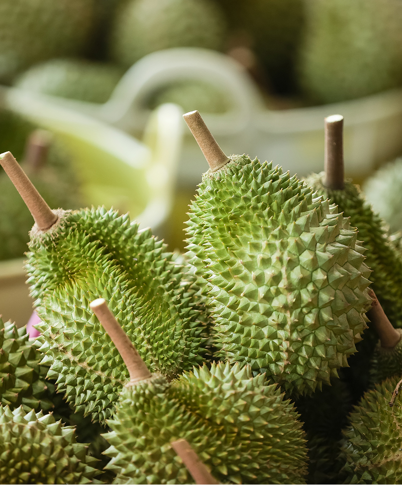
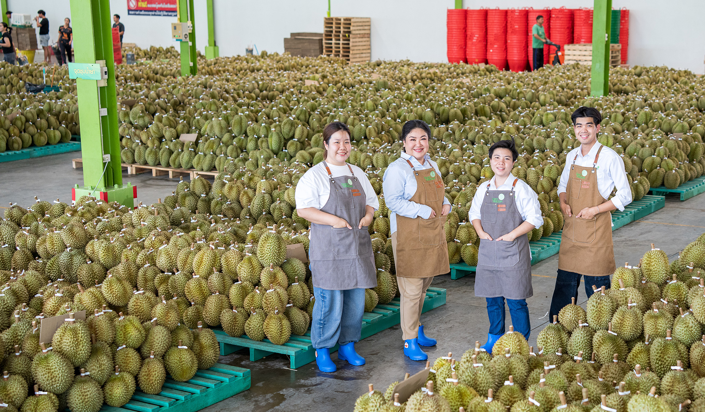

Thailand's Leading Export Durian
Premium Monthong
Monthong (Golden Pillow) is Thailand's most widely exported durian variety, renowned for its exceptional balance of flavour, texture, and consistency.



Its thick, creamy flesh, naturally sweet profile, and relatively mild aroma have made it the preferred choice for international markets, offering a refined eating experience for both first-time consumers and seasoned durian enthusiasts.
At Siam Fresh, our Premium Monthong is sourced from carefully selected orchards with trees aged over 28 years. Combined with extended on-tree ripening, this allows the fruit to develop greater flavour complexity, a smoother texture, and a naturally richer taste.
Inquire for ExportWhy Siam Fresh Durian Stands Out
Quality Begins Long Before Harvest.
At Siam Fresh, we source from orchards with durian trees aged over 28 years. Mature trees develop deeper root systems, stronger nutrient uptake, and more consistent fruit quality over time.
Every batch is monitored through strict quality control measures, with Dry Matter content exceeding 32% serving as a key benchmark for premium Monthong selection.
Extended on-tree ripening allows the fruit to develop richer flavour, smoother texture, and a naturally more satisfying eating experience.
Harvest Season
| Region | Harvest Window |
|---|---|
| Eastern Thailand (Chanthaburi, Rayong, Trat) |
April – June |
| Southern Thailand (Chumphon, Nakhon Si Thammarat) |
July – September |
A Naturally Nourishing Fruit
Beyond its distinctive flavour, durian is a naturally nourishing fruit rich in dietary fibre, Vitamin C, B vitamins, and potassium. As a natural source of energy, it offers both indulgence and nutritional value in every serving.
Per 100g
- 147 kcal Energy
- 27–28g Carbohydrates
- 3.8g Fibre
- 5g Healthy Plant Fats
“Premium Thai Durian. Selected Beyond Standard.”